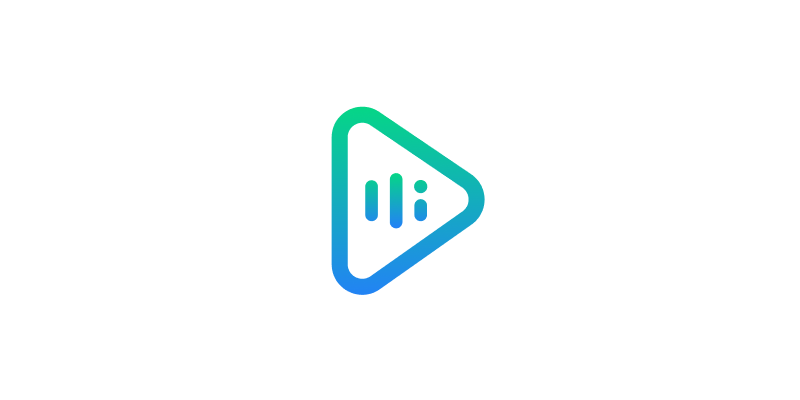

- 통칭 (삼성)전자녀
- 텍스트를 음성으로
- mp3다운
네이버의 인공지능 플랫폼. 보통 클로바 스마트 스피커로만 알고 있으나, AI 스피커 이외에도 Clova Speech Recognition, Clova Speech Synthesis, Clova Face Recognition, Clova Premium Voice 등의 서비스를 제공하고 있다. 음성 인식 서비스의 경우에는, 대부분의 음성 인식 비서 서비스들과 비슷하게 자연어 처리, 음성 인식 처리에 딥러닝 기술을 사용한다. 특이하게도 iOS 11 이후의 Siri처럼 음성 합성 기술에도 머신러닝을 사용해 다른 비서보다 음성이 더 자연스럽고, 감정을 담은 것같다.